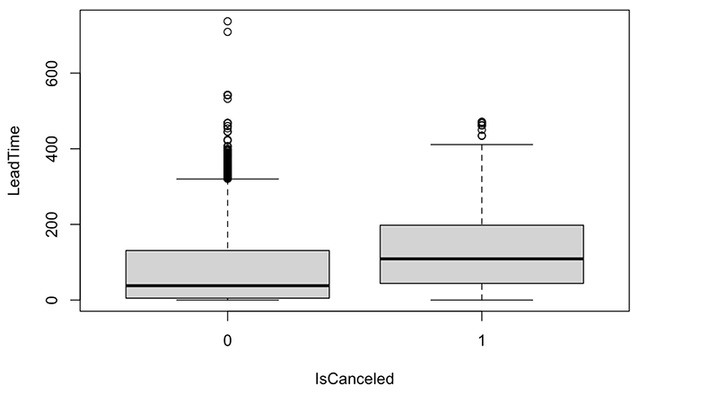
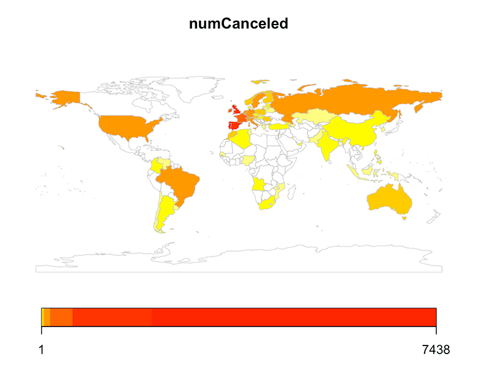
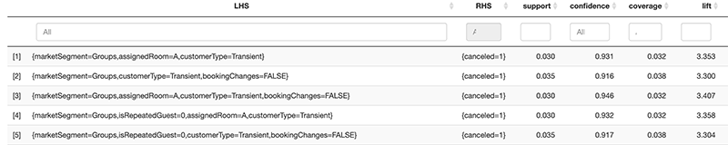

Marissa Carr's Portfolio
“Predicting Hotel Bookings that Lead to Cancellations”
The task was to predict what characteristics of a hotel booking would lead to cancellations using RStudio.
Boxplots
The first method used was examining different factors of the dataset on boxplots to see which factors had a stark difference between a cancelled booking and a non-cancelled booking. One factor that developed the most different looking boxplots was lead time (how far in advance the booking was made), which had a higher median for cancelled bookings. This is likely because the longer a booking is made in advance, the more time they have to change their plans and cancel their stay.
Histograms
Next, I did a similar analysis with histograms. Here I discovered that those who did not cancel their stay had a slightly higher frequency of making more booking changes than those who did not cancel their stay.
Mapping
I then used a map of the globe to identify which countries the hotel company had the most cancelled bookings in. The countries with the most cancellations were Portugal, Spain, the United Kingdom, and Ireland.
Association Rule Mining
Next, using association rule mining, I determined a list of rules that had high confidence, support, and lift values to discover that 91.74% of the time when a booking is made by a non-repeating guest, with a market segment of groups, a booking type of transient (meaning the booking was not part of a group, contract, or other transient bookings), and no booking changes were made before check in or cancellation, they will have also canceled their stay. The support value is 3.52%, meaning that these factors occur in the original data set together 3.52% of the time.
SVM, Tree Model, and Confusion Matrix
Then I created a support vector model, tree model, and a confusion matrix to determine which model had the best accuracy rate, but they both were very similar.
Conclusion
This analysis allowed me to suggest to the CEO of the hotel company to give a larger cancellation fee for non-repeated guests who book reservations with a market segment of groups, do not make any booking changes, and have a transient type of booking. This is because these factors have occurred together and led to a cancellation 3.52% of all the reservations given, so this combination should be looked out for and discouraged. In addition, I suggested overbooking rooms when the factors predicted in the model that indicate a cancellation are created in a booking together, so the cancellations can be accounted for and the hotel will not lose money when a guest cancels their stay.